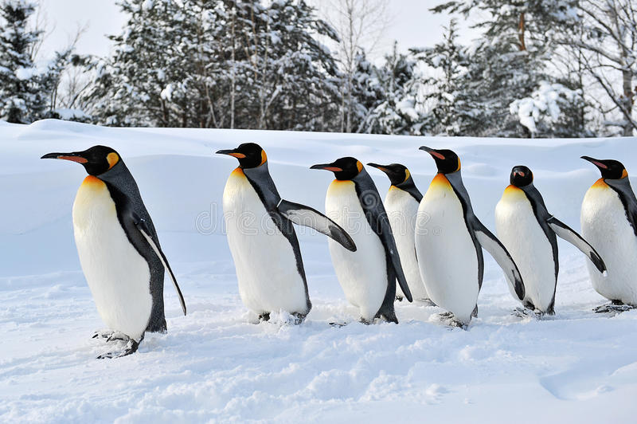

About
My interest in programming stems from its ability to enable forming communities, and that is why I am a software administrator for my campus’s Linux club. With a dedicated campus server, this role has allowed for me to host videogame servers for campus residents to play together all while learning various ins and outs of sever administration. Furthermore, I work on creating mods for the games in response to student feedback and serve as the secretary of the Linux club.
Beyond my campus community, I have participated in global communities. Last year I helped give a virtual presentation to hundreds of students in Romania about robot programming. In fact, my high school robotics team was recognized at the world championship for our outstanding participation in various communities, and we received a nomination for the Inspire Award, which is an honor only 12 teams got at the global level out of 7,500. This was in addition to recognition for excellent robot programming and making it to the semi-finals two years at the World Championship.